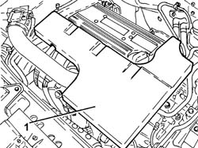
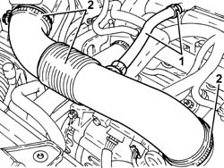
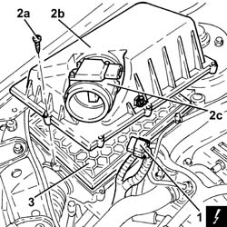
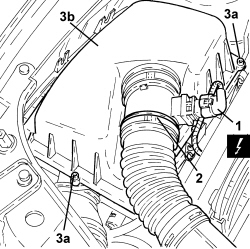
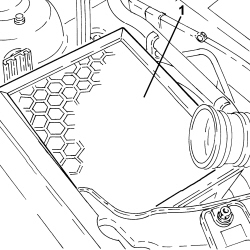
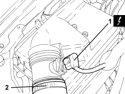
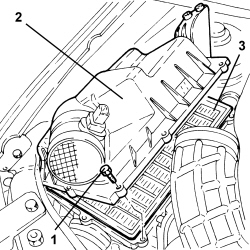

1048A14 AIR CLEANER FILTER ELEMENT - REPLACE.
- Path
- Procedures > 10 ENGINE > 1048 ENGINE AIR SUPPLY CIRCUIT > 1048A VACUUM AIR CIRCUIT > 1048A14 AIR CLEANER FILTER ELEMENT - REPLACE.
- Kind
- repair procedure (removal / refitting; the operation number is the code)
- Applies to
- engines: 2.2, 1.9 JTD 8v, 1.9 JTD 16v, 2.4 JTD 20v; all production periods
- Interactive page
- https://sloeber94.github.io/elrnDB-fCrm/en/#/194000304
Applies to: engines: 2.2; all production periods
 Removing
Removing
 Refitting
Refitting- Make sure that the ignition key is in the OFF position, then disconnect the battery terminal (-).
Description | Connector | |
|---|---|---|
- | Battery |
1. Remove the soundproof cover secured to the engine by three pins.

Applies to: engines: 2.2; all production periods
1. Loosen the band and disconnect the engine oil vapour recovery pipe from the cylinder head cover.
2. Loosen the bands and remove the air delivery sleeve from the air flow meter to the throttle body.

Applies to: engines: 2.2; all production periods
1. Disconnect the electrical connection from the air flow meter.
Description | Connector | |
|---|---|---|
1 | Air flow meter |
2. Undo the bolts (2a) and remove the air filter cover (2b), complete with air flow meter (2c).
3. Remove the air cleaner filter element.

Applies to: engines: 2.2; all production periods
Refitting
Removing- Position a new air cleaner filter element in its housing.
- Fit the cover for the air filter, complete with air flow meter, and secure it using the bolts.
- Connect the electrical connection to the air flow meter.
- Replace the air delivery sleeve from the air flow meter to the throttle valve in its housing, connect it and tighten the bands.
- Connect the engine oil vapour recovery pipe to the cylinder head cover and secure it using the band.
- Refit the soundproofing cover in its seat and secure to the engine with the three pins.
- Connect the negative battery terminal.
Applies to: engines: 1.9 JTD 8v, 1.9 JTD 16v; all production periods
Removing
Refitting- Make sure that the ignition key is in the OFF position, then disconnect the battery terminal (-).
Description | Connector | |
|---|---|---|
- | Battery |
1. Disconnect the electrical connection from the air flow meter.
Description | Connector | |
|---|---|---|
1 | Air flow meter |
2. Loosen the band and disconnect the corrugated hose from the air flow meter.
3. Undo the bolts (3a) and remove the air filter cover (3b) after having released it from the securing clips.

Applies to: engines: 1.9 JTD 8v, 1.9 JTD 16v; all production periods
1. Remove the air filter filter element.

Applies to: engines: 1.9 JTD 8v, 1.9 JTD 16v; all production periods
Refitting
Removing- Position a new air cleaner filter element in its housing.
- Place the air filter cover back in its housing and secure it using the clips and tighten bolts.
- Connect the corrugated hose to the air flow meter and tighten the band.
- Connect the electrical connection to the air flow meter.
- Connect the negative battery terminal.
Applies to: engines: 2.4 JTD 20v; all production periods
Removing
Refitting- Make sure that the ignition key is in the OFF position, then disconnect the battery terminal (-).
Op. 1016A10 SOUND-PROOFING COVER - R.R
1. Undo the bolts (1a) and move the diesel electronic injection system control unit (1b) to the side without disconnecting the electrical connections.

Applies to: engines: 2.4 JTD 20v; all production periods
1. Disconnect the electrical connection from the air flow meter.
Description | Connector | |
|---|---|---|
1 | Air flow meter |
2. Loosen the band and disconnect the hose from the air filter to the turbocharger, air flow meter side.

Applies to: engines: 2.4 JTD 20v; all production periods
1. Undo the bolts fixing the air filter cover.
2. Lift up the air filter cover after having released it from the fastening on the bodyshell and remove it.
3. Remove the air filter filter element.

Applies to: engines: 2.4 JTD 20v; all production periods
Refitting
Removing- Before fitting the new filter element, remove any impurities from the filter casing (through suction) that could fall into the "clean air" part of the circuit.
- Position a new air cleaner filter element in its housing.
- Place the air filter cover back in its housing and secure it using the bolts.
- Connect the hose from the air filter to the turbocharger, air flow meter side, and tighten the band.
- Connect the electrical connection to the air flow meter.
- Refit the diesel electronic injection system control unit in its housing and secure with the bolts.
Op. 1016A10 SOUND-PROOFING COVER - R.R
- Connect the negative battery terminal.
Topics linked from this page (3)
Topics that link to this page (10)
- B010 ENGINE DOES NOT START (UNDER ANY CIRCUMSTANCES)
- D003 ENGINE NOT RUNNING SMOOTHLY / (IRREGULAR OPERATION)
- D010 ENGINE IDLE IRREGULAR
- 1048OA AIR INTAKE/VACUUM CIRCUIT CHECK
- 0010K30 30,000KM SERVICE
- 0010K60 60,000KM SERVICE
- 0010K90 90,000KM SERVICE
- 0010M20 120,000KM SERVICE
- 0010M50 150,000KM SERVICE
- 0010M80 180,000KM SERVICE